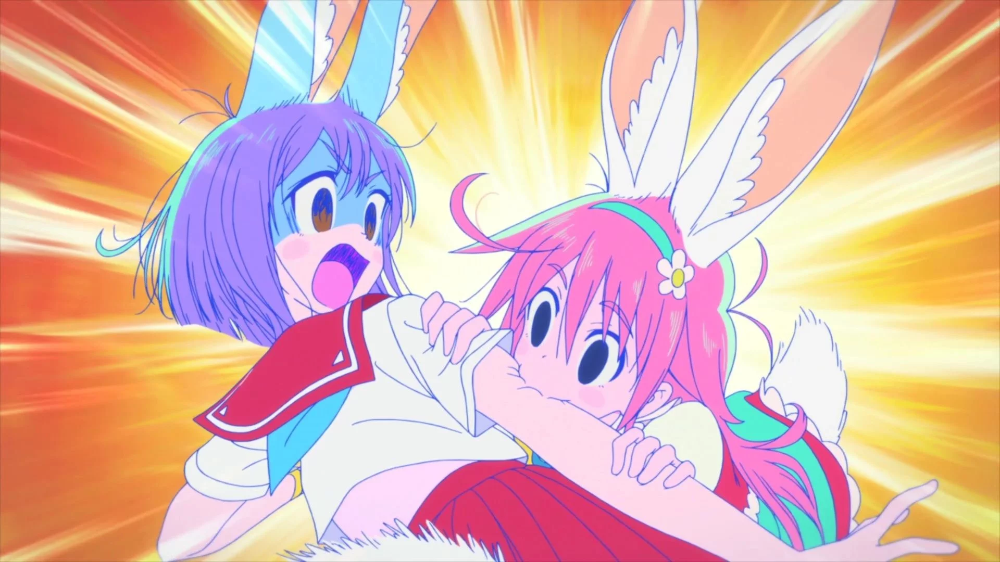

Flip Flappers ialah kisah dua gadis, iaitu Papika dan Cocona, yang merentasi pelbagai dunia untuk mengumpulkan serpihan-serpihan Amorphous. Dunia-dunia tersebut dipanggil Pure Illusion dan hanya boleh dimasuki oleh orang-orang tertentu sahaja. Bila dibaca ringkasan ini, ia seolah-olah hanyalah suatu animasi berkenaan dunia selari ataupun dunia multimesta. Namun, ia bukanlah satu anime tentang alam multimesta semata-mata.
Sifat sebenar dunia Pure Illusion mula menonjol di mata penonton pada episod 6, Pure Play, apabila tindakan Papika dan Cocona dalam suatu Pure Illusion itu menyebabkan perubahan pada senpainya, Irodori Iroha. Dengan perasaan hairan, mereka menuntut jawapan daripada Dr Hidaka. Dr Hidaka ialah seorang saintis yang bekerja dengan Flip Flap untuk mengkaji dunia-dunia Pure Illusion.
Menurut Dr Hidaka, Pure Illusion ialah suatu realiti yang dialami oleh suatu subjek berdasarkan interaksinya dalam alam ini. Beliau menambah lagi bahawa subjek yang disebutnya tidak tertakluk kepada manusia sahaja, tetapi semua makhluk. Daripada kenyataan ini, kita boleh fahami bahawa Pure Illusion itu bukan sahaja suatu dunia, tetapi ia adalah suatu dunia yang dimiliki oleh makhluk-makhluk hidup di dunia sebenar. Bila disandarkan kepada kejadian episod 6, kita boleh simpulkan bahawa dalam episod tersebut, Pure Illusion yang direntasi mereka ialah suatu dunia yang dimiliki Irodori Iroha.
Bukan itu sahaja, dalam episod 5, Pure Echo, rakan mereka Yayaka menerangkan kepada Cocona bahawa kecenderungan kita akan berubah setelah kita memasuki Pure Illusion. Hal ini ditonjolkan dengan kejadian pada episod 2. Dalam episod 2, Pure Converter, Papika dan Cocona mempunyai kecenderungan untuk menggigit benda-benda seperti kecenderungan Uexküll Si Arnab.

Gambar 1. Papika cenderung untuk menggigit bila berada dalam Pure Illusion yang ini. Kemudian, Cocona juga ditunjukkan mempunyai kecenderungan yang sama. Hal ini selari dengan teori Umwelt yang diusulkan oleh ahli biosemiotik Jakob von Uexküll. Teori Umwelt adalah teori yang mengatakan bahawa makhluk-makhluk berbeza hidup dalam dunia yang berbeza, iaitu umwelt masing-masing, walaupun kita semua wujud dalam satu dunia yang sama. Ia adalah perkataan Jerman yang bermaksud “Persekitaran”.
Menurut beliau, sebuah umwelt itu ditentukan oleh dua alat, iaitu alat deria dan alat kerja. Alat deria menerima ransangan-ransangan tertentu sahaja manakala alat kerja pula melakukan kerja-kerja khusus yang memanfaatkan makhluk tersebut berdasarkan ransangan yang diterima oleh alat deria. Disebabkan setiap sesuatu makhluk mempunyai alat deria dan alat kerja yang berbeza mengikut keperluan, maka setiap suatu makhluk itu sebenarnya sedang mengalami dunia yang berbeza.
Malah, hal ini dicerminkan dalam episod Pure Converter yang disebut sebelum ini. Dalam episod itu, kedua-dua Papika dan Cocona diberi alat deria arnab (telinga dan hidung arnab) dan alat kerja arnab (gigi arnab) bila ditarik masuk ke Pure Illusion milik Uexküll Si Arnab. Setelah diberikan dua alat tersebut, mereka berdua mempunyai kecenderungan yang sama seperti arnab tersebut, iaitu menggigit benda-benda keras. Tambahan pula, kekerasan dan kelembutan suatu objek itu lebih terserlah dalam dunia ini kerana itu adalah satu ransangan penting buat Uexküll Si Arnab yang suka menggigit benda.
Oleh itu, Pure Illusion ini bukanlah dunia lain yang bergerak selari lalu dihubungkan dengan suatu jambatan sepertimana teori alam selari yang digunakan dalam banyak cereka. Ia juga bukanlah suatu dunia yang mencapah dari satu titik mula sepertimana teori alam multimesta yang juga banyak digunakan dalam cereka. Pure Illusion adalah dunia yang sama seperti yang didiami oleh Papika dan Cocona tetapi dipandang melalui kacamata makhluk-makhluk berbeza sepertimana teori Umwelt.
Hal ini bukan sahaja suatu spekulasi semata-mata. Pengarah Flip Flappers, Kiyotaka Oshiyama, pernah mengaku bahawa banyak ilhamnya datang dari teori Umwelt ini. Katanya dalam satu temubual, “Asalnya, banyak pengetahuan saya yang berkaitan projek ini adalah daripada buku yang ditulis oleh ahli sains tingkah laku Toshitaka Hidaka. Penulisan beliau tentang Umwelt, sains tingkah laku, serta psikologi analitis ditulis dalam bahasa yang mudah difahami. Kemudian, karya Hayao Kawai tentang bidang psikologi, mitos-mitos dan ceritera rakyat juga membantu. Pure Illusion ini serupa dengan teori Umwelt, dan salah satu tema kisah Flip Flappers ialah tentang dunia kita yang berlapis-lapis, maka saya rasa psikologi juga penting untuk ditelaah.” Sebagai tambahan, kita dapat lihat bahawa nama Toshitaka Hidaka itu diabadikan dalam watak Dr Hidaka dan nama Jakob von Uexküll itu diabadikan dalam watak Uexküll Si Arnab.
DAFTAR PUSTAKA
von Uexküll, J. (1934) “A Stroll Through The Worlds of Animals and Men: A Picture Book of Invisible Worlds” Instinctive Behavior: The Development of a Modern Concept, sunt. & terj. Claire H. Schiller, New York: International Universities Press (1957) pp 5-80; cetak semula: Semiotica 89:4 (1992), pp 319-391.
New World Encyclopedia. Jakob von Uexküll pautan: https://www.newworldencyclopedia.org/entry/Jakob_von_Uexk%C3%BCll [17 Sept 2019]
“Flip Flappers: An Interview with Director Kiyotaka Oshiyama” (2017) Far From Animation, terj. TheHugBee. Pautan: https://farfromanimation.com/2017/01/06/flip-flappers-an-interview-with-director-kiyotaka-oshiyama/ [17 Sept 2019]